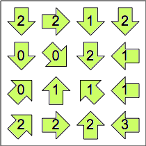

Holiday Puzzles 2021
| 1. HAPPY NEW YEAR
| |
Place the digits 1 through 9, in that order, in each row below so that the 3 equations are true. |
+ – × ( – ) – = 2022
– × ( – – + ) = 2022 
× ( + × ) – × = 2022
|
| 2. EVERY WHICH WAY
| Shade in some arrows below so that each number in an unshaded arrow indicates the number of unshaded arrows it points at.
| 
|
| |
|
| 3. NUMBER LINKS |
|
Put a different 2-digit number in each circle. Circles are connected by a line if the numbers they contain either differ by 1, have a ratio of 2 or 3, or look like the other when turned upside down. For example, 92 could be connected to 26, 46, 91, or 93. Leading zeroes are not allowed.
| |
|
| 4. NOEL? WE GOT PLENTY OF L's!
| |
Insert a letter in each blank to form words.
1. _ _ L L _ _ L L
2. _ _ L L _ _ L L _
3. _ L L _ _ _ L L _
4. _ _ L L _ _ _ L L
5. _ _ L L _ _ _ _ L L
6. _ _ L L _ _ _ L L _
7. _ _ _ L L _ _ L L _
8. _ L L _ _ _ _ _ L L _
9. _ _ _ L L _ _ _ L L _
|
|
| 5. WEIRD CHESS TOUR
| |
|
Start on some square on a 3×3 chessboard. Make 9 moves, visiting every square exactly once and returning to your starting square. Your 9 moves have to be in this order: B-B-N-B-R-N-N-R-R, where B stands for a bishop move (diagonal), R stands for a rook move (horizontal or vertical), and N stands for a knight move (an L-shaped move, 2 squares in one orthogonal direction and 1 square in the other).
|
|  |
|
|
|